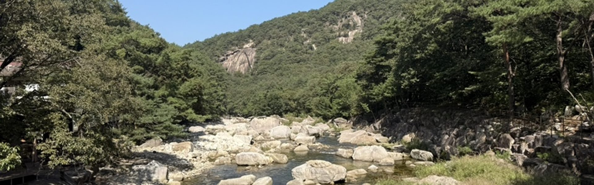
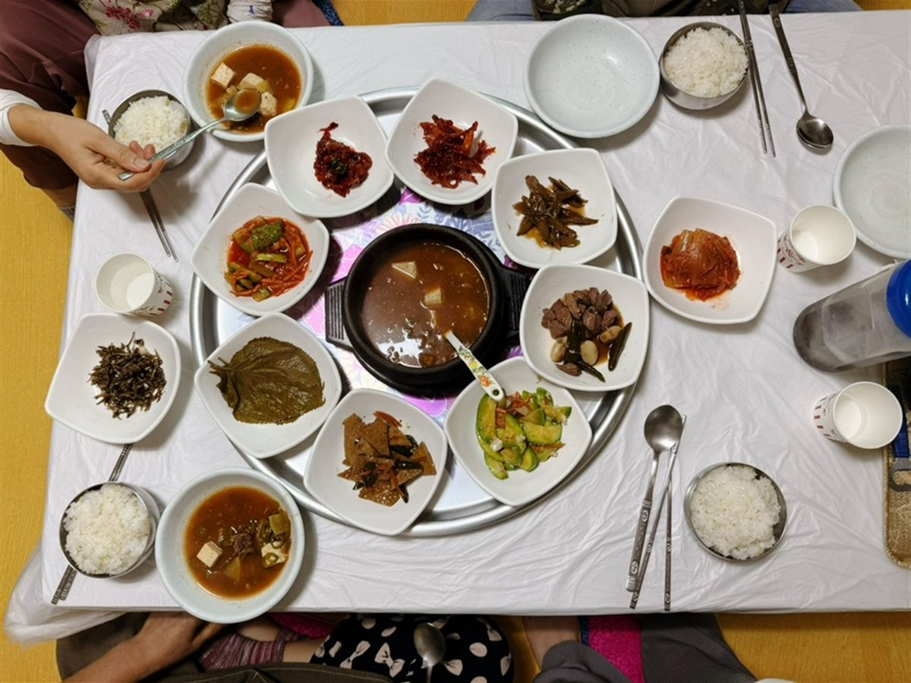
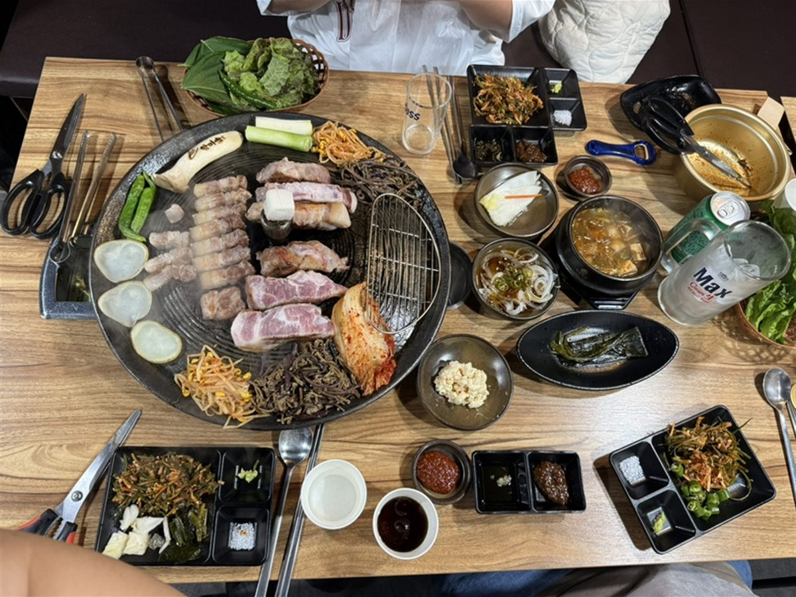
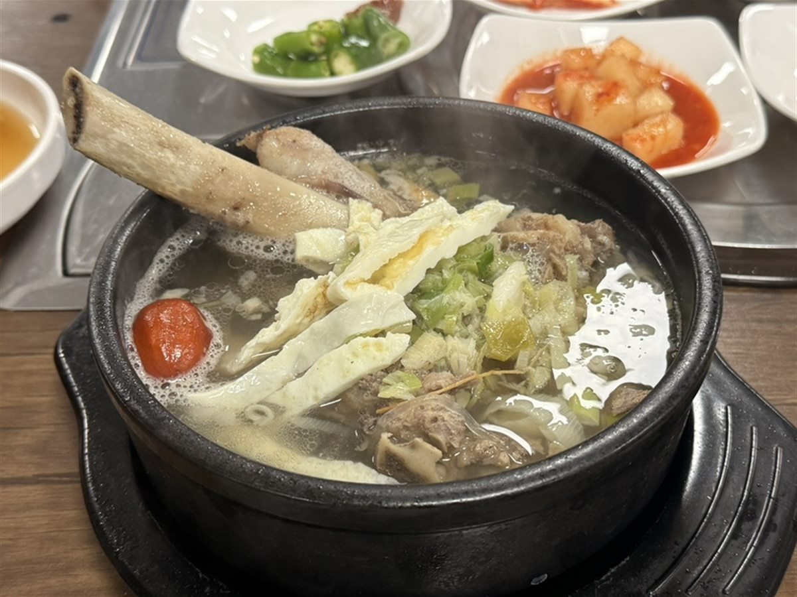

차로 약 7분
중선암 단양팔경
흰 바위 사이로 물이 흐르는 계곡. 데크로 정비된 둘레길이 완만해서 어르신이나 아이와 함께도 어렵지 않게 걷습니다.

Travel
土石桑
토석상은 방곡도예촌 안에 있습니다. 문을 열고 걸어 나가면 공방과 가마가 늘어선 마을이고, 차로 10분 안쪽에 단양팔경의 계곡이 있습니다. 아래는 저희가 손님들께 실제로 권해 드리는 곳들입니다.
차로 약 7분
흰 바위 사이로 물이 흐르는 계곡. 데크로 정비된 둘레길이 완만해서 어르신이나 아이와 함께도 어렵지 않게 걷습니다.

차로 약 30분
남한강이 시내를 감아 도는 야경이 한눈에 들어옵니다. 해가 진 뒤에 올라가셔야 제맛이고, 패러글라이딩 활공장이기도 합니다.

차로 약 15분
바위를 그대로 안고 돌로 쌓아 올린 건물. 통유리 너머로 계곡을 내려다보며 핸드드립 한 잔 하기 좋습니다.

차로 약 10분
산나물과 된장찌개를 내는 시골 백반집. 아침 겸 점심으로 들르기 좋습니다.

차로 약 25분
단양 시내의 숙성 고깃집. 저녁 장을 보러 나가시는 길에 함께 들르시면 좋습니다.

차로 약 25분
고기를 골라 바로 구워 먹는 정육식당. 같은 건물에 베이커리 카페 스카이라운지가 있습니다.
소요 시간은 대략적인 기준입니다. 계절과 도로 사정에 따라 달라질 수 있습니다.